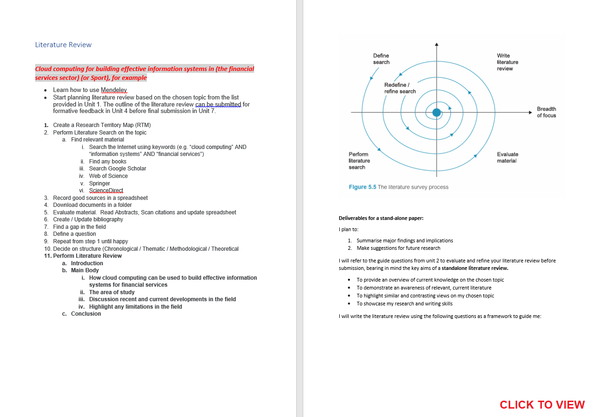

Research Methods and Professional Practice

Artefacts and Feedback
| CLQ1 |      |
| Reasoning Quiz |  |
| Reflective Activity 1 |   |
| Literature Review (Outline) |  |
| Reflective Activity 2 |   |
| Wiki Activity |  |
| Literature Review |   |
| CLQ2 |       |
| Research Proposal Overview |  |
| Statistical Spreadsheets |  Exe 8.1B Exe 8.2B Exe 8.3D Exe 8.4G Exe 8.6C Exe 9.1D Exe 9.2E Exe 9.3B Exe 8.1B Exe 8.2B Exe 8.3D Exe 8.4G Exe 8.6C Exe 9.1D Exe 9.2E Exe 9.3B |
| Statistical Spreadsheets Feedback |  |
| Research Proposal |  |
| Professional Development Plan |  |
| SWOT Analysis |  |
| Action Plan |  |
| Self Test Quiz |  |

Reflections
Unit 1
As in all previous modules, I have tried to get as far ahead as possible in the first few weeks by reading material. I have increased my knowledge in ethics in computing and learnt more about various codes of conduct (Association for Computing Machinery, 2018: British Computer Society, N.D.), the Belmont and Menlo Reports, various legislation, and the difference between inductive and deductive reasoning (Miessler, 2020). I have also begun to learn how to formulate a research project (Dawson, 2015). I was able to put this together coherently into my reflective activity piece.
Unit 2
I have learnt lots more about the various methods of research through further reading, including the difference between qualitative and quantitative research, and primary and secondary research (QuestionPro, N.D.). I have also discovered others’ ways of thinking regarding ethics in relation to the ACM case studies. Ags particularly enlightened me to discriminatory issues, as well as how to escalate them (Angelides, 2022). This helped me form a broader consideration for the topic and understand points of view that I may not have otherwise seen.
Unit 3
Unfortunately, I have gone into this week feeling low and frustrated. I do not seem to have an academic understanding of how the various components of research link together within the modules: i.e., Literature Review, Research Proposal, and the final capstone project. My tutor has helped me substantially and I now feel foolish that I am not able to get a grasp on it. I am sure this will come together eventually, however it has prevented me from really progressing in the module and has left me feeling very worried. In the meantime, I have grasped a new respect for the ethical issues in computing through reading and the lecturecast from unit 1, especially where the Internet is concerned (Stahl et al., 2016). In writing my summary post, I was able to consolidate my understanding, and I will surely carry this forward in any future work that I do.
Unit 4
I have been unable to move forward in my literature review due to the lack of understanding of how it fits in with the research proposal and the project. This has left me feeling very frustrated and now dispirited. I did however, through the unit reading learn of the various benefits and pitfalls of different data gathering techniques, especially for case studies, observing (Farquhar, 2012), and focus groups (Sim & Waterfield, 2019).
Unit 5
The Reflective Activity 2 directly allowed me to learn how questionnaires can be used to exploit the trust of respondents. It is therefore the researcher’s responsibility to protect the respondents’ collected data, especially if it is personal identifiable information (PII). It is important we do not cause harm when involving persons as part of our research, and that we respect their privacy. The seminar from this week stressed the importance of anonymising the source of information, asking for informed consent when conducting questionnaires, and stressing the importance that data protection measures are administered as the data are ultimately owned by the respondents and not by researchers. Through the lecturecast, I was also able to learn the advantages and disadvantages of methods such as face-to-face interviews and remote questionnaires, and when to use them.
Unit 6
Through this week’s lecturecast, I learnt how complex proper questionnaire design is and that it is not simply writing questions randomly. I learnt the importance of orderly questionnaire design, how to avoid poor question structures such as leading questions, and techniques to maximise the amount of valid responses. I also learnt the difference between surveys and questionnaires, pre- and post-testing, and how to analyse responses. My understanding was further strengthened by the reading materials (Brace, 2013; QuestionPro, N.D.; SAGE Video, 2018), and in particular the wiki activity that allowed me to dive further into analysing a questionnaire, using the UK Government (2011) as a case study.
Unit 7
I have handed in the literature review which has given me a thorough understanding on the areas where cloud computing is used in sport, including requirements, future developments and limitations. It also made me think further about areas in which this technology might be further useful, such as supporting the mental aspects of sport and talent spotting. I have also learnt the importance of generalisability, validity and reliability in research from accessing material from the lecturecast (Adolphus, N.D.) and the reading (Kaplan & Maxwell, 2005). I learnt the importance of obtaining respondents’ feedback, techniques such as triangulation which is used to strengthen results claims using additional alternative methods, actively looking for negative or contradictory evidence to ensure validity, and how to avoid confounding variables (Backman, 2012). The CLQ2 was intriguing, and in my initial post, I was encouraged to look into a number of new sources to find out how to pursue ethical conflicts.
Unit 8
I have again found the unit demanding. The reading was especially challenging with regard to the various statistical functions and when to use them (Berenson et al., 2015). I plan to revisit this material again once I have gathered primary data for my capstone project to gain a complete understanding, however the worksheets and exercises were helpful as they enabled me to practice using some realistic examples. It was especially good to see how Excel could be used to describe quantitative data analysis, and this is something I would definitely consider for data analysis in real scenarios.
Unit 9
Through the reading, I learnt how charts could be used to display data more clearly and objectively. I was introduced to several new charts I had not come across before such as the Pareto chart (Berenson et al., 2015). I found these worksheets much easier, because of tacit knowledge in understanding how to create bar charts in Excel, however the histogram chart was extremely useful and is something I am sure to use in future research. I also summarised my findings for the CLQ and reflected on the importance of ethics, accuracy and completeness when performing research. It also gave me a deeper understanding on why reputable sources should always be used (Meadows, 2022). As a bi-product, I would now feel completely confident in raising unethical concerns in the real world as well as how to do so. Finally, the reading also gave me a greater understanding of how to improve qualitative data analysis, and the importance of coding (Bhatia, 2018; BRM, 2021).
Unit 10
I have been able to delve much deeper into a specific area of my literature review. By conducting a research proposal, I was able to gain a much more focused and articulated view into how cloud computing can help identify talent in sport. Through the lecturecast and reading materials, I also learnt some very useful tips on how to conduct a research project and how to avoid common pitfalls (University of Essex, N.D.). I still do not know what my research topic will be yet, however I soon turn my focus to this once I have completed my ePortfolio, and I have several weeks before it begins.
Unit 11
A big relief as the Research Proposal is complete, and so this week was spent completing my ePortfolio. I also updated my Professional Skills Matrix, which made me realise how far I have come, and my Action Plan, which is future focused and looks towards on the Computing Project in the next module. Through the reading materials, I was able to understand more ways in which ePortfolios can be used. My view is still that a CV with a link to LinkedIn is sufficient for job hunting, in fact LinkedIn is cited as an ePortfolio platform by Winchell (2018), and was commonly considered as a duplication of ePortfolios (Weber, 2018). It was interesting however, to find that results of students improved when completing an ePortfolio in parallel to one’s studies (Händel et al., 2020).
Unit 12
I have found the group modules in this course challenging, and so the material in this unit, particularly of Chapman (2019), was beneficial in supporting my learning regarding project management. Agile and Waterfall methodologies were already familiar to me from previous studies, however applying risk management to projects was a useful prompt to consider pitfalls for what lies ahead, and the use of a maturity model made me question if I could apply it to my own maturity to find ways to improve risk management processes in my own projects. I sometimes find it difficult not to hold others to my own standards and often prefer to work solitarily as I like to be proud of what I holistically achieve. However, to succeed professionally, and in the capstone project, I must address these issues and more readily accept input from others.
I scored seven from eight correctly on the quiz. I tried to do this using tacit knowledge and with help from the lighter reading materials in the unit as I plan to read the Project Management book (Maylor, 2010) during the Christmas period where I will have more time and it will be fresher in my mind for the project. The question I answered incorrectly however, I would argue was incorrectly marked. If a system implementation is outsourced to a third party, then this in my mind, and according to Cast Software (N.D.), is transferring risk and therefore should have been the correct answer. However, I was reasonably happy with a score of seven, and I hope this bodes well for the dissertation in January.
References
Adolphus, M. (N.D.) Reliability, validity and generalizability. Available from: http://www.adolphus.me.uk/emx/empirical_research/reliability.htm
Angelides, A. (2022) Initial Post. Available from: https://www.my-course.co.uk/mod/hsuforum/discuss.php?d=325555 [Accessed 04 October 2022].
Association for Computing Machinery. (2018) ACM Code of Ethics and Professional Conduct. Available from: https://www.acm.org/code-of-ethics [Accessed 17 October 2022].
Backman, R. (2012) 1 3 2 Confounding Variables. Available from: https://www.youtube.com/watch?v=B7QdNYLp_E0 [Accessed 03 November 2022].
Berenson, M. L., Levine, D. M., & Szabat, K.A. (2015) Basic Business Statistics: Concepts and Applications. 3rd ed. Harlow: Pearson Education. Available from: https://web-s-ebscohost-com.uniessexlib.idm.oclc.org/ehost/detail/detail?vid=0&sid=9056b2d7-a68d-4843-a10f-c2c80010b70f%40redis&bdata=JnNpdGU9ZWhvc3QtbGl2ZQ%3d%3d#AN=1419545&db=nlebk [Accessed 14 November 2022].
Bhatia, M. (2018) Your Guide to Qualitative and Quantitative Data Analysis Methods. 5 September 2018. Humans of Data. Available from: https://humansofdata.atlan.com/2018/09/qualitative-quantitative-data-analysis-methods [Accessed 17 November 2022].
Brace, I. (2013) Questionnaire Design: How to Plan, Structure and Write Survey Material for Effective Market Research. 3rd ed. London: Kogan Page. Available from: https://www.vlebooks.com/Product/Index/334847?page=0 [Accessed 29 October 2022].
British Computer Society. (N.D.) BCS Code of Conduct. Available from: https://www.bcs.org/membership-and-registrations/become-a-member/bcs-code-of-conduct [Accessed 17 October 2022].
Business Research Methodology (BRM). (N.D.) Qualitative Data Analysis. Available from: https://research-methodology.net/research-methods/data-analysis/qualitative-data-analysis [Accessed 17 November 2022].
Cast Software. (N.D.) Risk Management in Software Development and Software Engineering Projects. Available from: https://www.castsoftware.com/research-labs/risk-management-in-software-development-and-software-engineering-projects [Accessed 01 December 2022].
Chapman, R. J. (2019) Exploring the Value of Risk Management for Projects: Improving Capability Through the Deployment of a Maturity Model. IEEE Engineering Management Review 47(1): 126-143. DOI: https://ieeexplore.ieee.org/document/8607005
Dawson, C. W. (2015) Projects in Computing and Information Systems: A Student's Guide. Harlow: Pearson Education. Available from: https://ebookcentral-proquest-com.uniessexlib.idm.oclc.org/lib/universityofessex-ebooks/detail.action?docID=5176771 [Accessed 17 October 2022].
Farquhar, J.D. (2012) Case Study Research for Business. London: SAGE. Available from: https://methods-sagepub-com.uniessexlib.idm.oclc.org/book/case-study-research-for-business [Accessed 17 October 2022].
Händel, M., Wimmer, B. & Ziegler, A. (2020) E-Portfolio Use and its Effects on Exam Performance – A Field Study. Studies in Higher Education 45(2): 258-270. DOI: https://doi.org/10.1080/03075079.2018.1510388
Kaplan, B. & Maxwell, J.A. (2005) Qualitative Research Methods for Evaluating Computer Information Systems in Evaluating the Organizational Impact of Healthcare Information Systems. 2nd ed. New York, USA: Springer. Available from: https://ebookcentral.proquest.com/lib/universityofessex-ebooks/reader.action?docID=264813 [Accessed 01 November 2022].
Maylor, H. (2010) Project Management. 4th ed. Harlow: Pearson Education. Available from: https://ebookcentral-proquest-com.uniessexlib.idm.oclc.org/lib/universityofessex-ebooks/detail.action?docID=5173571 [Accessed 30 November 2022].
Meadows, R. (2022) Summary Post. Available from: https://www.my-course.co.uk/mod/hsuforum/discuss.php?d=332337 [Accessed 18 November 2022].
Miessler, D. (2020) The Difference Between Deductive and Inductive Reasoning. Available from: https://danielmiessler.com/blog/the-difference-between-deductive-and-inductive-reasoning [Accessed 17 October 2022].
QuestionPro. (N.D.) Quantitative Research. Available from: https://www.questionpro.com/blog/quantitative-research [Accessed 17 October 2022].
QuestionPro. (N.D.) Questionnaire Vs Survey: Is There A Difference?. Available from: https://www.questionpro.com/blog/questionnaire-vs-survey-difference [Accessed 30 October 2022].
SAGE Video. (2018) Designing a Survey. Available from: https://www.youtube.com/watch?v=mdVWbuffdNY [Accessed 30 October 2022].
Sim, J & Waterfield, J. (2019) Focus Group Methodology: Some Ethical Challenges. Quantity & Quantity 53(6): 3003-3022. DOI: https://doi-org.uniessexlib.idm.oclc.org/10.1007/s11135-019-00914-5
Stahl, B. C., Timmermans, J. & Mittelstadt, B. D. (2016) The Ethics of Computing: A Survey of the Computing-Oriented Literature. ACM Computing Surveys 48(55): 1-38. DOI: https://doi-org.uniessexlib.idm.oclc.org/10.1145/2871196
UK Government. (2011) DWP benefits statistical summary: user questionnaire. Available from: https://www.gov.uk/government/collections/dwp-statistical-summaries [Accessed 1 November 2022].
University of Essex. (N.D) How to write a research project. Available from: https://www.my-course.co.uk/pluginfile.php/259821/mod_resource/content/1/UoE%20-%20How%20to%20Write%20a%20Research%20Project.pdf [Accessed 28 November 2022].
Weber, K. (2018) Employer Perceptions of an Engineering Student’s Electronic Portfolio. International Journal of ePortfolio 8(1): 57-71. Available from: https://www.theijep.com/pdf/IJEP272.pdf [Accessed 28 November 2022].
Winchell, Z. (2018) E-Portfolios and Their Uses in Higher Education. Available from: https://ctl.wiley.com/e-portfolios-and-their-uses-in-higher-education [Accessed 28 November 2022].